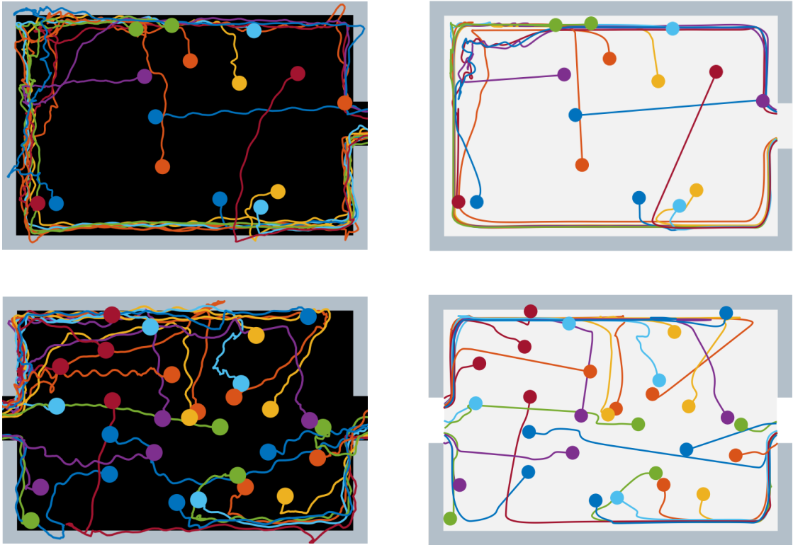
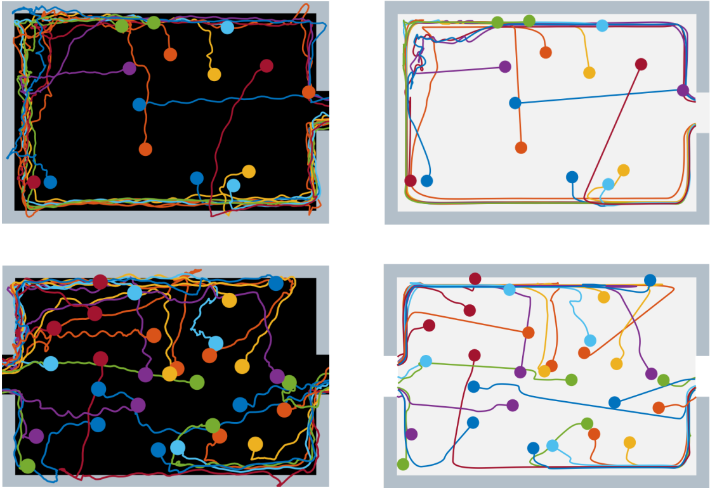

最新研究
有限能见度下疏散过程中的跟墙行为：实验与模拟
在能见度有限的情况下，跟墙是行人疏散时的重要导航手段。关于墙跟随行为的经验和实验结果在文献中很少。行人是如何接近墙壁的，他们如何决定沿着方向的墙壁，以及他们如何解决冲突的，这些都还不清楚。为此，我们在一个模拟房间里进行了疏散实验。每个参与者都戴着一顶棒球帽，帽子上盖着一层不透明的面纱，以创造有限的能见度条件。实验结果显示，270例中205例受试者伸开双臂，试图用触觉搜索墙壁，其余病例受试者用视觉而非触觉搜索墙壁。研究结果还揭示了行人在沿墙方向决策时的潜在行为模式。最后，在社会力量模型的基础上，提出了一种墙跟踪模型。仿真结果与实验结果一致。
更多内容.. 
